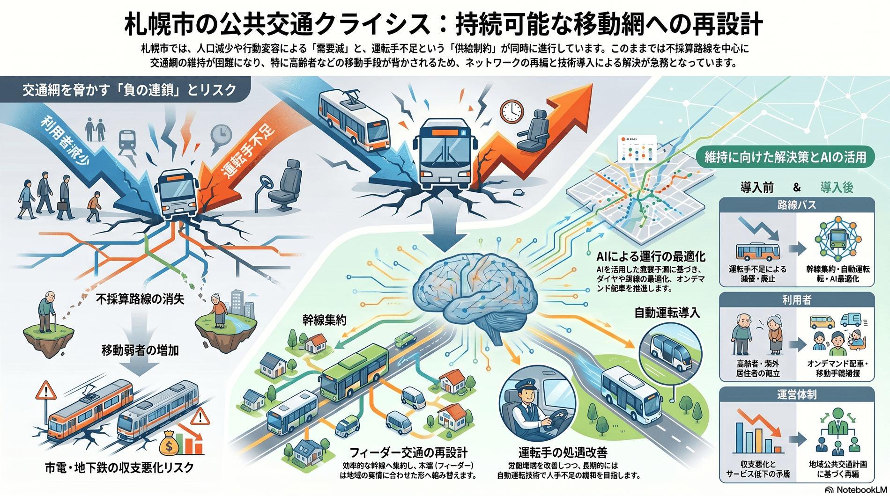

公共交通の利用者減と運転手不足
需要減と運転手不足の両面から、交通網の維持が難しくなっている。

背景
公共交通は札幌の高密度な都市構造を支える基盤である。人口減・行動変容による需要減と、路線バス運転手の不足という供給制約が同時に進み、不採算路線から先に維持が難しくなる。2024年4月の運転者の労働時間規制強化（『2024年問題』）も重なり、主要バス各社が相次いで減便・路線廃止に踏み切っている。
主要データ
| 中央バス（2025年4月改定） | 平日合計440便を減便（6%強）。2020年12月の950便に次ぐ過去2番目の規模 |
|---|---|
| じょうてつバス（2024年） | 南区中心に4月で86便減。前年10月＋2月の計97便減と合わせ大幅縮小 |
| JR北海道バス（2024年12月） | 札幌圏で平日146便・土日祝86便減（平日約5%）。乗務員40〜50人不足 |
事実
- バスの利用者数が大幅に減少している。
- 人口減少やコロナ後の行動変容による需要減に加え、路線バスの運転手不足など供給側の問題で将来の交通網維持が懸念されている。
- 北海道中央バスは2025年4月のダイヤ改正で平日合計440便（6%強）を減便し、駒岡線・空沼線（南区）、栄町・篠路線（東区）、東苗穂線（東区）、新道西線（北・西区）など札幌市内6路線を廃止。南・東区の3路線は他に公共交通のない『交通空白地』となった。
- じょうてつバス（南区中心）は2024年4月に市内86便を減便し、2023年10月・2024年2月の計97便減と合わせて運行を大きく縮小。JR北海道バスも2024年12月に札幌圏で平日146便・土日祝86便（平日約5%）を減らした。
- いずれも『2024年問題』（自動車運転者の労働時間規制強化）と慢性的な運転手不足、利用者減が背景で、各社とも運転士が不足している（JR北海道バスは40〜50人不足）。
- 札幌市は2024年11月に『地域公共交通計画』を策定した。
解釈
需要と担い手が同時に細ると、不採算路線から先に失われ、車を持たない高齢者などの移動が脅かされる。減便はダイヤ全体に及ぶため、もともと本数の少ない郊外路線では朝夕の通勤・通学時間帯にも選択肢が減り、地域差が広がる。
提案
- 幹線への集約とフィーダー交通の再設計（沿線サービス低下とのトレードオフ）。
- 運転手の処遇改善・自動運転等の技術導入。
深掘り — 市民の声と答え
北区・南区・清田など、自分の地域のバスはどれくらい減っているの？
主要3社が相次いで減便している。北海道中央バスは2025年4月に平日440便（6%強）を減らし、新道西線（北・西区）、駒岡線・空沼線（南区）などを廃止（南・東区の一部は『交通空白地』に）。南区はじょうてつバスも2024年に86便、前年からの分も含め計約180便超を削減。北区・清田などを含む札幌圏ではJR北海道バスが2024年12月に平日146便（約5%）を減らした。路線によっては『1時間に1本』が続く区間も出ている。
通勤・通学のピーク時間でも減っているの？ なぜ減らさざるを得ないの？
減便は特定の時間帯だけでなくダイヤ全体に及ぶため、もともと本数の少ない郊外路線では朝夕の通勤・通学時間帯でも選択肢が減る。背景は、利用者減による採算の悪化に加え、2024年4月に運転者の労働時間規制が強まった『2024年問題』と、高齢化・新規採用減による運転手不足。各社は「ダイヤを維持できない苦渋の決断」として、便数や路線の見直しを進めている。
検討体制・メンバー
札幌市の公共交通協議会（市・交通事業者・国・道・住民等で構成）が場となる。検討会には交通計画の専門家、バス・地下鉄・タクシー事業者、運転手の労働組合、沿線住民・高齢者代表を加え、需要と担い手の両面を扱う。
AIノート
AIの貢献度は中〜大。需要予測に基づくダイヤ・路線最適化、オンデマンド配車、将来的な自動運転バスは運転手不足の緩和に直結しうる。短期は運行効率化、長期は自動化で効果が大きいが、安全認可と社会受容が前提。